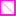

<!doctype html>
<html lang="en">
    <head>
        <meta charset="utf-8">
        <meta http-equiv="X-UA-Compatible" content="IE=edge">
        <meta name="viewport" content="initial-scale=1,user-scalable=no,maximum-scale=1,width=device-width">
        <meta name="mobile-web-app-capable" content="yes">
        <meta name="apple-mobile-web-app-capable" content="yes">
        <link rel="stylesheet" href="css/leaflet.css"><link rel="stylesheet" href="css/L.Control.Locate.min.css">
        <link rel="stylesheet" href="css/qgis2web.css"><link rel="stylesheet" href="css/fontawesome-all.min.css">
        <link rel="stylesheet" href="css/leaflet-search.css">
        <link rel="stylesheet" href="css/leaflet-measure.css">
        <style>
        html, body, #map {
            width: 100%;
            height: 100%;
            padding: 0;
            margin: 0;
        }
        </style>
        <title></title>
    </head>
    <body>
        <div id="map">
        </div>
        <script src="js/qgis2web_expressions.js"></script>
        <script src="js/leaflet.js"></script><script src="js/L.Control.Locate.min.js"></script>
        <script src="js/multi-style-layer.js"></script>
        <script src="js/leaflet.rotatedMarker.js"></script>
        <script src="js/leaflet.pattern.js"></script>
        <script src="js/leaflet-hash.js"></script>
        <script src="js/Autolinker.min.js"></script>
        <script src="js/rbush.min.js"></script>
        <script src="js/labelgun.min.js"></script>
        <script src="js/labels.js"></script>
        <script src="js/leaflet-measure.js"></script>
        <script src="js/leaflet-search.js"></script>
        <script src="data/FarmMerged_1.js"></script>
        <script src="data/Camps_2.js"></script>
        <script src="data/NceraRoad_3.js"></script>
        <script>
        var map = L.map('map', {
            zoomControl:true, maxZoom:28, minZoom:1
        }).fitBounds([[-33.087709851012185,27.710913728496642],[-33.0572138661418,27.78035075547549]]);
        var hash = new L.Hash(map);
        map.attributionControl.setPrefix('<a href="https://github.com/tomchadwin/qgis2web" target="_blank">qgis2web</a> &middot; <a href="https://leafletjs.com" title="A JS library for interactive maps">Leaflet</a> &middot; <a href="https://qgis.org">QGIS</a>');
        var autolinker = new Autolinker({truncate: {length: 30, location: 'smart'}});
        L.control.locate({locateOptions: {maxZoom: 19}}).addTo(map);
        var measureControl = new L.Control.Measure({
            position: 'topleft',
            primaryLengthUnit: 'meters',
            secondaryLengthUnit: 'kilometers',
            primaryAreaUnit: 'sqmeters',
            secondaryAreaUnit: 'hectares'
        });
        measureControl.addTo(map);
        document.getElementsByClassName('leaflet-control-measure-toggle')[0]
        .innerHTML = '';
        document.getElementsByClassName('leaflet-control-measure-toggle')[0]
        .className += ' fas fa-ruler';
        var bounds_group = new L.featureGroup([]);
        function setBounds() {
            map.setMaxBounds(map.getBounds());
        }
        map.createPane('pane_FarmOutline_0');
        map.getPane('pane_FarmOutline_0').style.zIndex = 400;
        var img_FarmOutline_0 = 'data/FarmOutline_0.png';
        var img_bounds_FarmOutline_0 = [[-33.0858296822441,27.72477300383113],[-33.05886878830788,27.75748571965886]];
        var layer_FarmOutline_0 = new L.imageOverlay(img_FarmOutline_0,
                                              img_bounds_FarmOutline_0,
                                              {pane: 'pane_FarmOutline_0'});
        bounds_group.addLayer(layer_FarmOutline_0);
        map.addLayer(layer_FarmOutline_0);
        function pop_FarmMerged_1(feature, layer) {
            var popupContent = '<table>\
                    <tr>\
                        <td colspan="2"><strong>FARMNAME</strong><br />' + (feature.properties['FARMNAME'] !== null ? autolinker.link(feature.properties['FARMNAME'].toLocaleString()) : '') + '</td>\
                    </tr>\
                    <tr>\
                        <th scope="row">Area</th>\
                        <td>' + (feature.properties['Area'] !== null ? autolinker.link(feature.properties['Area'].toLocaleString()) : '') + '</td>\
                    </tr>\
                </table>';
            layer.bindPopup(popupContent, {maxHeight: 400});
        }

        function style_FarmMerged_1_0() {
            return {
                pane: 'pane_FarmMerged_1',
                opacity: 1,
                color: 'rgba(53,121,177,1.0)',
                dashArray: '',
                lineCap: 'square',
                lineJoin: 'bevel',
                weight: 4.0,
                fillOpacity: 0,
                interactive: true,
            }
        }
        map.createPane('pane_FarmMerged_1');
        map.getPane('pane_FarmMerged_1').style.zIndex = 401;
        map.getPane('pane_FarmMerged_1').style['mix-blend-mode'] = 'normal';
        var layer_FarmMerged_1 = new L.geoJson(json_FarmMerged_1, {
            attribution: '',
            interactive: true,
            dataVar: 'json_FarmMerged_1',
            layerName: 'layer_FarmMerged_1',
            pane: 'pane_FarmMerged_1',
            onEachFeature: pop_FarmMerged_1,
            style: style_FarmMerged_1_0,
        });
        bounds_group.addLayer(layer_FarmMerged_1);
        map.addLayer(layer_FarmMerged_1);
        function pop_Camps_2(feature, layer) {
            var popupContent = '<table>\
                    <tr>\
                        <td colspan="2"><strong>Camp Name</strong><br />' + (feature.properties['Camp Name'] !== null ? autolinker.link(feature.properties['Camp Name'].toLocaleString()) : '') + '</td>\
                    </tr>\
                    <tr>\
                        <th scope="row">Bulls</th>\
                        <td>' + (feature.properties['Bulls'] !== null ? autolinker.link(feature.properties['Bulls'].toLocaleString()) : '') + '</td>\
                    </tr>\
                    <tr>\
                        <th scope="row">Calves</th>\
                        <td>' + (feature.properties['Calves'] !== null ? autolinker.link(feature.properties['Calves'].toLocaleString()) : '') + '</td>\
                    </tr>\
                    <tr>\
                        <th scope="row">Cows</th>\
                        <td>' + (feature.properties['Cows'] !== null ? autolinker.link(feature.properties['Cows'].toLocaleString()) : '') + '</td>\
                    </tr>\
                    <tr>\
                        <th scope="row">Area</th>\
                        <td>' + (feature.properties['Area'] !== null ? autolinker.link(feature.properties['Area'].toLocaleString()) : '') + '</td>\
                    </tr>\
                </table>';
            layer.bindPopup(popupContent, {maxHeight: 400});
        }

        var pattern_Camps_2_0 = new L.StripePattern({
            weight: 0.3,
            spaceWeight: 2.0,
            color: '#ff7fe8',
            opacity: 1.0,
            spaceOpacity: 0,
            angle: 315
        });
        pattern_Camps_2_0.addTo(map);
        function style_Camps_2_0() {
            return {
                pane: 'pane_Camps_2',
                stroke: false,
                fillOpacity: 1,
                fillPattern: pattern_Camps_2_0,
                interactive: true,
            }
        }
        var pattern_Camps_2_1 = new L.StripePattern({
            weight: 0.3,
            spaceWeight: 2.0,
            color: '#ff00d0',
            opacity: 1.0,
            spaceOpacity: 0,
            angle: 225
        });
        pattern_Camps_2_1.addTo(map);
        function style_Camps_2_1() {
            return {
                pane: 'pane_Camps_2',
                stroke: false,
                fillOpacity: 1,
                fillPattern: pattern_Camps_2_1,
                interactive: true,
            }
        }
        function style_Camps_2_2() {
            return {
                pane: 'pane_Camps_2',
                opacity: 1,
                color: 'rgba(255,0,208,1.0)',
                dashArray: '',
                lineCap: 'square',
                lineJoin: 'bevel',
                weight: 2.0,
                fillOpacity: 0,
                interactive: true,
            }
        }
        map.createPane('pane_Camps_2');
        map.getPane('pane_Camps_2').style.zIndex = 402;
        map.getPane('pane_Camps_2').style['mix-blend-mode'] = 'normal';
        var layer_Camps_2 = new L.geoJson.multiStyle(json_Camps_2, {
            attribution: '',
            interactive: true,
            dataVar: 'json_Camps_2',
            layerName: 'layer_Camps_2',
            pane: 'pane_Camps_2',
            onEachFeature: pop_Camps_2,
            styles: [style_Camps_2_0,style_Camps_2_1,style_Camps_2_2,]
        });
        bounds_group.addLayer(layer_Camps_2);
        map.addLayer(layer_Camps_2);
        function pop_NceraRoad_3(feature, layer) {
            var popupContent = '<table>\
                    <tr>\
                        <td colspan="2">' + (feature.properties['Id'] !== null ? autolinker.link(feature.properties['Id'].toLocaleString()) : '') + '</td>\
                    </tr>\
                </table>';
            layer.bindPopup(popupContent, {maxHeight: 400});
        }

        function style_NceraRoad_3_0() {
            return {
                pane: 'pane_NceraRoad_3',
                opacity: 1,
                color: 'rgba(229,182,54,1.0)',
                dashArray: '',
                lineCap: 'square',
                lineJoin: 'bevel',
                weight: 1.0,
                fillOpacity: 0,
                interactive: true,
            }
        }
        map.createPane('pane_NceraRoad_3');
        map.getPane('pane_NceraRoad_3').style.zIndex = 403;
        map.getPane('pane_NceraRoad_3').style['mix-blend-mode'] = 'normal';
        var layer_NceraRoad_3 = new L.geoJson(json_NceraRoad_3, {
            attribution: '',
            interactive: true,
            dataVar: 'json_NceraRoad_3',
            layerName: 'layer_NceraRoad_3',
            pane: 'pane_NceraRoad_3',
            onEachFeature: pop_NceraRoad_3,
            style: style_NceraRoad_3_0,
        });
        bounds_group.addLayer(layer_NceraRoad_3);
        map.addLayer(layer_NceraRoad_3);
        var baseMaps = {};
        L.control.layers(baseMaps,{' Ncera Road': layer_NceraRoad_3,' Camps': layer_Camps_2,' FarmMerged': layer_FarmMerged_1,"FarmOutline": layer_FarmOutline_0,}).addTo(map);
        setBounds();
        map.addControl(new L.Control.Search({
            layer: layer_Camps_2,
            initial: false,
            hideMarkerOnCollapse: true,
            propertyName: 'Camp Name'}));
        document.getElementsByClassName('search-button')[0].className +=
         ' fa fa-binoculars';
        L.ImageOverlay.include({
            getBounds: function () {
                return this._bounds;
            }
        });
        </script>
    </body>
</html>
